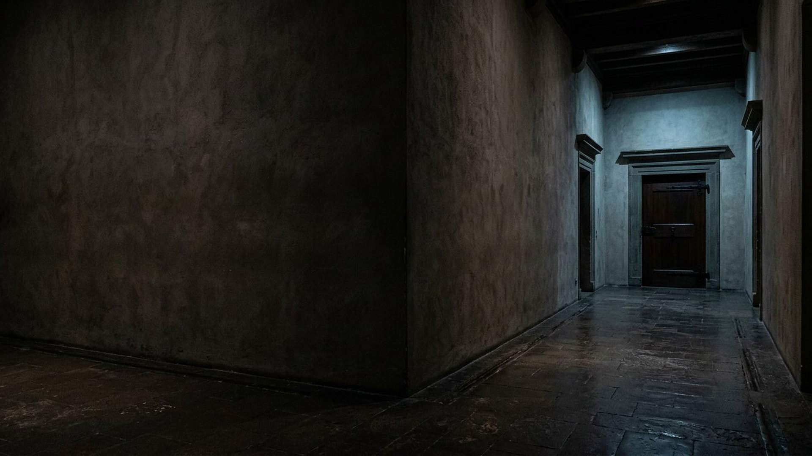

Erreur 404
Cette page n’était pas annoncée
Même une prophétie ne l’aurait pas prévue. Retournez au musée.
Le lien est peut-être ancien, ou la page a changé de nom.

Erreur 404
Même une prophétie ne l’aurait pas prévue. Retournez au musée.
Le lien est peut-être ancien, ou la page a changé de nom.